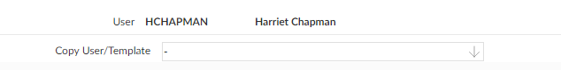
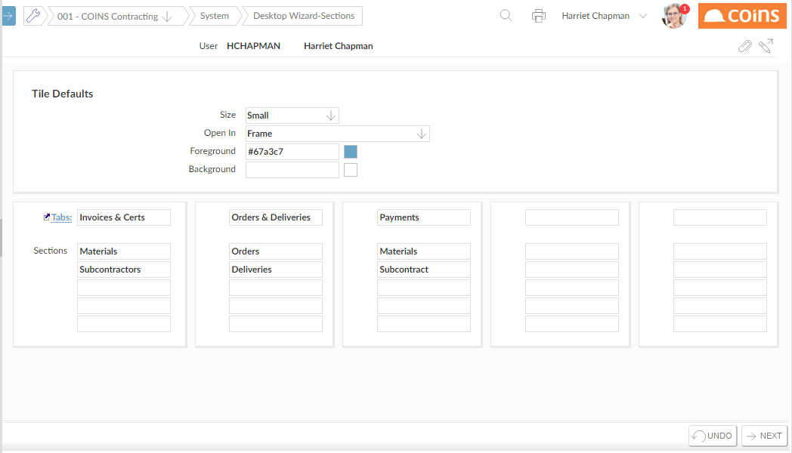
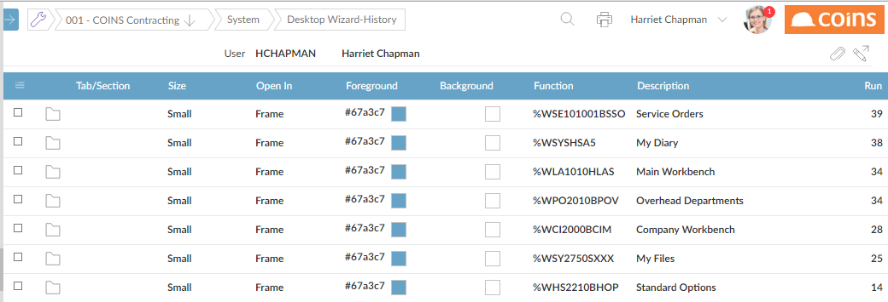

To set up your Desktop:
The wizard consists of a sequence of screens:
- On the first screen, choose an existing Desktop to copy. This is used as the 'starting point' for your Desktop.
Screenshot: Desktop Wizard
 - If you select an existing Desktop,
- If you select the Desktop that has your own user ID,
- If you leave this blank,
- On the Sections screen, name the tabs you want on the desktop, and the sections you want on each tab. Enter at least one section for each tab.
Screenshot: Sections Screen
 - On the History screen, select the functions to add to the Desktop. The browse shows a list of functions.
Screenshot: History Screen
At the top of the list are the functions that are already on your Desktop (if any). Below that are other functions you have run, arranged according to how often you have run them. To add any of these to your Desktop:
- Click
 .
. - Choose which tab and section to add them to.
- Click
 .
.
NOTE
You can also use Concurrent Update. - Click
- Click the
 button.
button.
You can then modify the appearance of the tiles, and how the functions open, using the Desktop tab in User Preferences (see Configuring Your